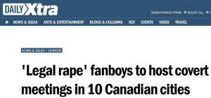

Michael is the author of Staying Married in a Degenerate Age. Follow him on Twitter or Facebook. You can read more of his writing at Honor and Daring.


The firestorm that was unleashed after Roosh announced the worldwide meetup exceeded what anyone could have imagined. The message from the attack on the meetups is clear: masculinity is a threat to the established order, and therefore it must be crushed at any cost. This is why Return of Kings needs your support like it never has before.

Over time I’ve become convinced that Western nations are plutocracies—they are governed by a relatively small number of extremely wealthy people. While these elites are not necessarily part of a conspiracy, they do share one common goal: they want to maintain their position of power. Thus, the establishment takes steps to ensure that the lower classes are appeased. We are permitted to act freely as long as it does not pose a threat to the establishment.
However, the elite will move to crush any movement that poses a potential threat. If a group poses a threat to the established order, it will be attacked in the media. If the group is compatible with the establishment, it will be permitted or even fostered.
As long as neomasculinity remained at the level of men working on self-improvement, the elites were willing to leave us alone. But as soon as Roosh announced that men would be getting together in the real world, the elites moved swiftly. In what appears to have been a predetermined plan, the elites unleashed the media in an unprecedented way to put a stop to ROK becoming actualized in real space.
And judging by the depth and hysterical nature of the attack (it was international and included major newspapers, television, and politicians—even the British Parliament), the establishment thinks that the ROK meetups pose a very grave threat indeed.
A “journalist” at the Daily Mail confirmed a dox of Roosh’s parents that was put out by Anonymous, which exposed his family to threats of violence. In addition to the death threats leveled at Roosh, SJWs also threatened to kill Matt Forney. But it is not just Roosh and the ROK writers who have been attacked, every man who reads ROK has been slandered by the media. We’ve been called “misogynists,” “legal rape advocates,” “legal rape fanboys,” a “rape advocate mob,” and “pro rape pickup artists.”
Roosh had to implement greater security on his websites, including this one. He also had to hire a private security company to protect his family from unhinged SJWs (he shortened his family visit and re-located to take heat off of them). All of these expenses have added up to a hefty sum. Roosh estimates that he’ll need about $10,000 to pay for extra security costs and server administration that keep us online. That’s why we are asking for your support today.
1. Drop something in the tip jar. A donation of $100 or more it would be greatly appreciated, but we’d appreciate any donation, no matter how small. You can also donate a small amount every month. If you’ve gotten some benefit out of reading Return of Kings, please consider chipping in at least a few dollars.
2. Buy ROK advertising for your business. If you have a product to sell, another good way to help is by purchasing advertising on ROK or on the podcast. I would encourage readers to buy from our sponsors if the product meets your needs.
3. Buy Roosh’s books. You can do so via Bang Guides or Amazon. If you are already married, consider getting the books for an unmarried friend or relative. If you have already read some of these books, consider placing a review on Amazon.
It also helps to get the message out to more men. Encourage your friends, relatives, and coworkers to check out ROK. Share articles that you agree with on social media. Every little bit that we do to build up our tribe makes us stronger.
The establishment identified ROK as an existential threat to the current degenerate order…
…and, they are right. We are.
We are not going to stop until we bring back the patriarchy. Their attempt to crush us has only made us smarter and more determined to help men achieve success financially, physically, romantically, and spiritually. We want to remake society into a place where both men and women can be happier. If we all work together, we can realize our goal.